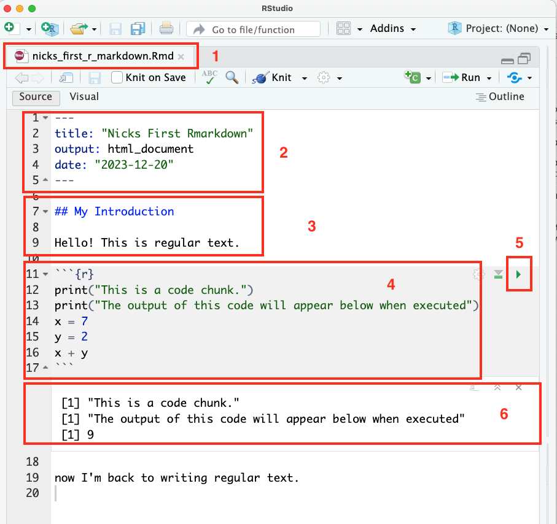

R Markdown¶
Up until, we’ve focused on how to work with R using .R plaintext files. .R files are excellent when most of what you’re writing is code, and I continue to recommend them for your research and more intensive R programming.
There is, however, a second way to work with R that is often popular for problem sets and developing instructional materials: R Markdown.
R Markdown is a tool for easily integrating text, code, and code output into a single document. This not only makes R Markdown documents incredibly useful for instructional materials (this entire site is actually built with something analogous to R Markdown), but it is also a useful format for sharing simple analyses with colleagues. Using R Markdown, you can not only share the conclusions of your analysis with colleagues, but also the code that generated those analyses, making it easy for others to see how you reached your conclusions, and, crucially, play with that code to see what happens if the analysis is changed slightly.
(If you know about Jupyter Notebooks, this may be sounding extremely familiar — R Markdown is effectively R’s native version of Jupyter notebooks. If you know and love Jupyter Notebooks, you can always use those for your R code too).
R Markdown Organization¶
In the next reading, I’ll go through how to create your own R Markdown files in RStudio. Before we start doing things, however, I want to give you an overview of how R Markdown documents are organized, and why they’re worth learning.
What is an R Markdown Document?¶
An R Markdown file is actually just a plain text file that (a) has a filename that ends in .Rmd, and (b) contains text formatted in a special way. To illustrate, here’s a very simple R Markdown notebook:

Let’s discuss the various components of this file in turn using this annotated version of that file:

Here you see the name of the file. The file name ends in
.Rmd, which is how RStudio knows this is an R Markdown file.This block of text — placed at the top of the document between two sets of three dashes
---— provides basic metadata about the document, like the title, author, and output format (which we’ll talk about below).This is where the body of the R Markdown document begins. By default, anything written in the body of an R Markdown document will be treated as text. The heading (
## My Introduction) is blue because the two hash marks on the left tell R it’s a heading, and so RStudio has made it blue to make it easier to read. The text below is, well, just normal text! This is where you might write a summary of what you’re going to do below.This section is called a code chunk, and it consists of everything between the three backticks and
{r}at the top and the three backticks at the bottom (the{r}is there to tell R Markdown this is R code — R Markdown does allow you to also include code in other programming languages).When you click this green arrow, this code chunk will run, and…
The result of the code will appear here, below the code block!
So in practice, writing a short R Markdown notebook might look something like this:
Exporting R Markdown Files¶
At the point, you may be saying to yourself “ok… I guess this is a little different from a .R file in that I can add text without commenting it out. But is that really so cool?
Well… no. The reason R Markdown files are useful is because you can export the notebook into a range of different (and aesthetically pleasing) formats.
Along the top of the document, you may have noticed a kinda odd ball of string and knitting icon — clicking that button will “knit” your notebook into a different format (by calling a library called knitr). Or, if you click the dropdown arrow next to it, you can see some of the formats to which you can knit your document:
The easiest (by far) is HTML, which creates a document that can be opened in any web browser and which looks something like this:
You can also turn this into a PDF by clicking the ``Open in Browser`` button, then in your browser printing to PDF. This is by far the easiest way to convert an R Markdown file to PDF.
Print to PDF¶
To print to PDF on a Mac from Chrome (or a Chrome-like browser), go to the File menu, select Print, select More Settings, Print Using System Dialog..., then click the PDF button in the bottom left.
In Windows, follow these directions
Export to LaTeX¶
You can also have your R Markdown notebook rendered using LaTeX into a PDF if you have LaTeX installed and configured (something we’ll talk about below). That results in a file that looks something like this (but be warned, it’s pretty common to run into weird formatting issues if you go this route.):
If you want to go the LaTeX route you’ll need to install LaTeX first.
Formatting Text¶
The final thing to explain about R Markdown is that even though an R Markdown document is written in plain text (meaning there are no fonts you can select or font sizes to choose directly), you can change the way that text will be rendered when you export your file. That’s because your can mark your text in ways that communicates to R how you want it to be styled using a language called… Markdown!
Markdown is great, and is in no way unique to R Markdown — it’s used across the internet, and once you know what it is, you’ll find you start seeing it everywhere.
Basically, if you want to italicize something, you put one star on either side (*this will be italicized*), want something bold, put two stars on either side (**this will be bold**). Want to write a link, just but the text you want shown in square brackets and the URL of the link immediately after in parentheses ([this is a link](http://www.link.com)).
And finally, if you start a line with #, it will be treated as a heading. The more # you use, the smaller the heading becomes. Your R Markdown always starts with an implicit title (the one given in the document metadata), so usually the headings you use within an R Markdown document start with two or more #s.
(Technically, there are a couple versions of markdown that differ in small ways, but if you follow this guide you’ll be in pretty safe shape).
Crucially for social scientists, R Markdown also supports mathematical notation. If you wrap text in a pair of dollar signs, it will be rendered beautifully on export. For example, $x_1 + y^2 = \sum_{i=1}^{25} z^i$ becomes \(x_1 + y^2 = \sum_{i=1}^{25} z^i\).
You can learn more about mathematical notation here.
Embedding Images and the Importance of Alt-Text¶
Finally, Markdown is also capable of embedding image files (that’s how I got all the nice pictures in these tutorials in!). The syntax is pretty simple: basically, on a new line, put in an !, square brackets in which you place a description of the image, then a pair of parentheses with the file path to the image you want included (or a url to an image you want to embed, but only do that if you have permission to copy someone else’s image!):

You may be thinking “this is just the syntax for links described above, but with a ! at the front!” And, well, you’d be right! But unlike a link to a webpage, it has to be on its own line, and the text between the square brackets won’t be obviously visible anywhere — that text is something called alt text, and it’s a crucial resource for people with vision problems who use the descriptions embedded in alt text to help them understand images. So if you’re going to put something on the internet, please do include a real description between those square brackets, even if its only a few words.
Additional Formatting
You can also modify the rendering of embedded images in Markdown by putting some keywords in {} after the file link. To make images smaller, for example, you can add:
{width=75%}
And you can also wrap an image to change alignment:
<center>
{width=75%}
</center>
For all R Markdown image tricks, check out this page.
Note: Image formatting tricks are one of those things that aren’t very standard across implementations of markdown, so while these tricks will work in R Markdown, they may not work elsewhere.